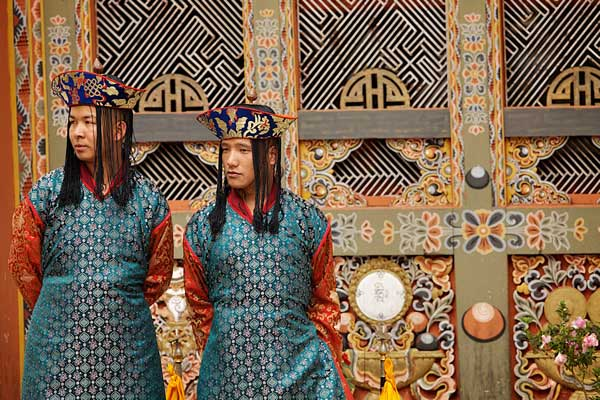

The culture of Bhutan is unique in that, until recently, very little has changed in the last 100 years or so. The reason for this lack of change has been due to isolation--both geographically and politically. Bhutan is situated between India and China within the range of the Himalayan Mountains. There are only two airports and 5,000 miles of road (both paved and unpaved).1 Currently no railway in to or out of the country exists, and only people from the surrounding countries can get into Bhutan without paying a high daily tourist tax. Presently in order to visit Bhutan one has to have a visa, approval prior to the visit, and spend a minimum of $250 daily.2 Prior to 1974 visitors were not allowed into Bhutan at all.3
Bhutanese people are primarily Buddhists, though the second largest religion is Hinduism. Bhutanese culture is steeped in history still affecting its culture today. One example of this is the style of dress seen throughout Bhutan. The driglam namzha, or national customs and etiquette—in this case meaning the dress code, dictates what can be worn by men—a traditional knee-length robe called a gho, and women—a traditional ankle length dress that is achieved by using a piece of cloth called a kira.4 The cuisine of Bhutan consists primarily of food available in the region. An example of items commonly available in the Bhutanese diet is rice, beans, chicken, pork, yak, chilies, cheese, and lentils.
It was in the 1960s that Bhutan first began considering bringing in ‘modern’ media to the country. The first radio broadcast was aired in the early 1970s and the first television broadcast in the late 1990s—the last country in the world to do so.5 Despite it’s slow technological progress Bhutan has become acquainted with 21st century technology such as the Internet, allowing for its citizens to read online Bhutan newspapers and watch, for example, the Olympics.
Religion is extremely important to the history and culture of Bhutan and nothing shows this more than the Bhutanese monasteries. There are several monasteries in Bhutan and children join the order between the ages of six to nine. If not a monk other Bhutanese industries include agriculture, forestry, tourism, and creating hydroelectric power.

Bhutanese men wearing traditional ceremonial clothing
for the wedding of the 5th Wangchuck king.
1 2012. "Bhutan." The CIA World Factbook. Retrieved September 2012.
2 Chhetri, Pushkar. August 31, 2011. "It’s US$ 250 a day from January 2012." Bhutan Observer. Retrieved September 2012.
3 Dolan, Rebecca. October 19, 2011. "Life Inside A Bhutanese Monastery." The Huffington Post. Retrieved September 2012.
4 "History of Bhutan" Mother Earth Travel. Retrieved September 2012.
5 May 2002. "Bhutan - The Last Place" PBS. Retrieved September 2012.

Click here to learn more.